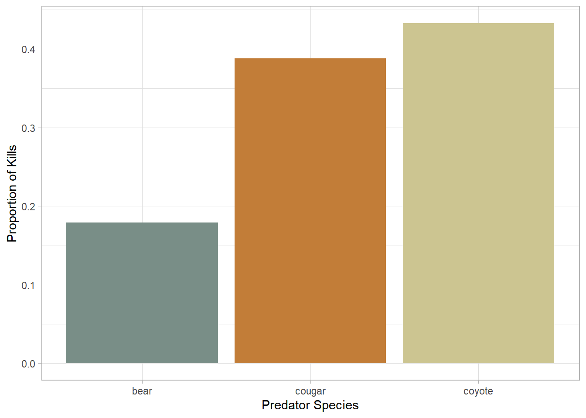
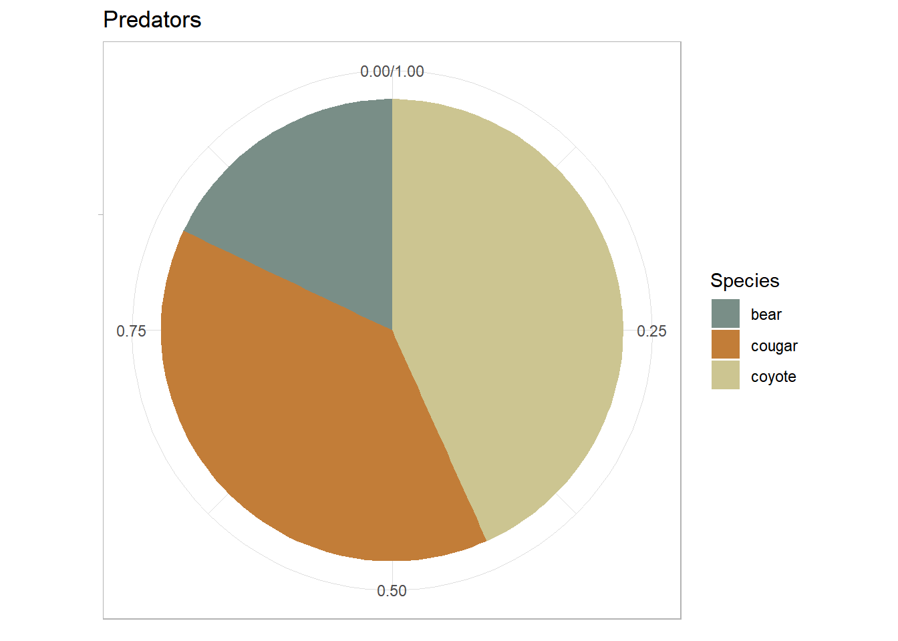
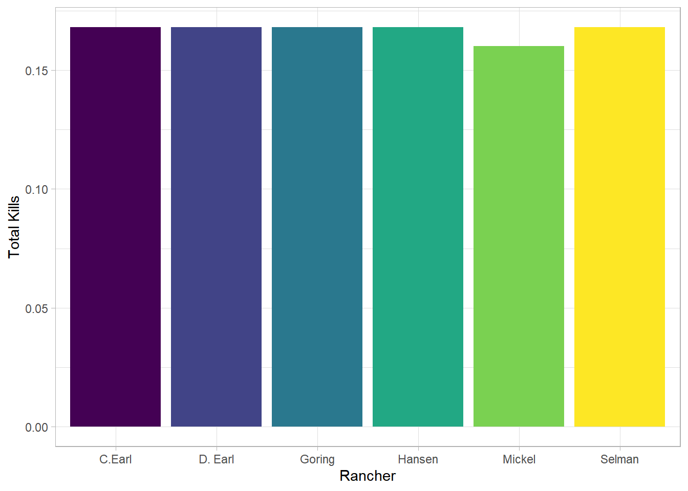

Chapter 4 Proportion of Lamb Deaths Related to Predation
4.1 Intro
Predation is a major concern for the domestic sheep industry. Advances in synthetic fabrics and a decrease in the demand for lamb and mutton have led to a major decline in the sheep and wool industry in the last century. Increases in predator populations and tighter restrictions on predator control measures also contribute to the hardships that sheep ranchers face. A better understanding of what predators are responsible for sheep and lamb depredations would allow for more targeted predator control efforts and it will help ensure that ranchers are adequately compensated for losses brought about by protected predator species.
In this chapter I will try to analyze and show what predators were responsible for what proportion of loss in our fictional collar database. Eventually we will also temporal, spatial and habitat differences as well as predator densities, animal husbandry practices, and other factors as they arise.
4.2 Predator loss
In the fictional dataset 125 collared lambs were lost to predation. The main predators of lambs in Utah as mentioned previously are coyotes, cougars, and bears. Eagles, domestic dogs, and other mesopredators are also known to take small lambs, but these numbers are much smaller, and there were none taken by these in the fictional dataset.
## pred_species
## 1 coyote
## 2 bear
## 3 cougarNow to find what predators are most responsible for lamb loss.
predators <- killsites %>%
select(pred_species) %>%
filter(pred_species !="na") %>%
group_by(pred_species) %>%
tally() predators %>%
mutate(prop = n/sum(n)) %>%
ggplot(aes(x = pred_species, y = prop,
fill = pred_species))+
geom_bar(stat = "identity")+
theme_light()+
labs(x = "Predator Species",
y = "Proportion of Kills",
fill = " ")+
theme(legend.position = "none")+
scale_fill_manual(values=wes_palette( "Moonrise2"))
predators %>%
mutate(prop = n/sum(n)) %>%
ggplot(aes(x = " ", y=prop, fill = pred_species)) +
geom_bar(width = 1, stat = "identity") +
theme(axis.line = element_blank(),
plot.title = element_text(hjust=0.5)) +
labs(fill="Species",
x=NULL,
y=NULL,
title="Predators")+
theme_light()+
scale_fill_manual(values=wes_palette( "Moonrise2"))+
coord_polar(theta = "y", start=0)
It looks like coyotes were lamb enemy number one with cougars a close second. In reality we would probably expect to see the bear and cougar portions to be about half what we see in this dataset.
Each rancher will be interested to know how they fared in comparison to the others that participated in the study so I separated the dead lambs by rancher.
tagging %>%
left_join(killsites, by ="lamb_id") %>%
group_by(rancher) %>%
select(killsite_id) %>%
filter(killsite_id !="na") %>%
tally() %>%
mutate(proprancher = n/sum(n)) %>%
ggplot(aes(x = rancher,
y = proprancher,
fill = rancher))+
geom_bar(stat = "identity")+
theme_light()+
labs(x = "Rancher",
y = "Total Kills",
fill = " ")+
theme(legend.position = "none")+
scale_fill_ordinal()## Adding missing grouping variables: `rancher`
It appears that they all lost almost exactly the same amount of sheep, Almost like someone made up this data.
Understanding which predators have the most impact on the domestic lambs can guide efforts to mitigate human and predator conflicts